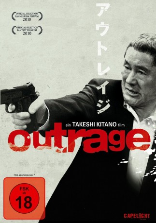
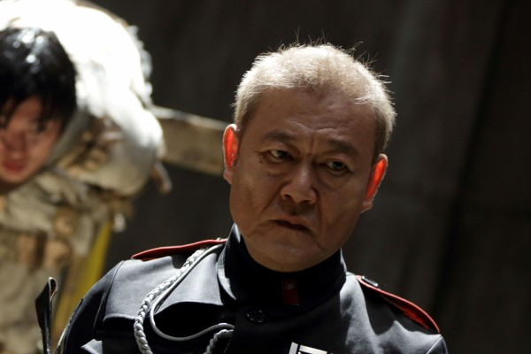
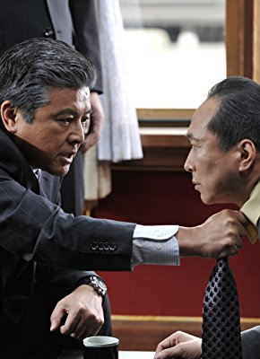

#1831 Outrage
 gesehen am 04.01.2016
gesehen am 04.01.2016
 
 IMDB-Wertung: 6.8 / 10
IMDB-Wertung: 6.8 / 10  Metascore: 67
Metascore: 67 
Alles beginnt mit einer kleinen Warnung. Als Sekiuchi, der Kaichô des Sannô-kai-Clans, seinem Unterboss Ikemoto zu verstehen gibt, dass er dessen Anbandelei mit der Murase-gumi (mit deren Oberhaupt Ikemoto im Gefängnis Bruderschaft geschlossen hat) gar nicht gut findet, beauftragt dieser seinen Freund Ôtomo und dessen Gruppe dort ein neues Büro zu eröffnen und so für etwas Zwist zu sorgen. Was am Anfang noch zu funktionieren scheint, gerät allerdings langsam aber sicher immer mehr außer Kontrolle, als einer von Ôtomos Männern in einer Hostessen-Bar von Murase ausgenommen wird. Es beginnt eine Spirale aus Racheaktionen und Intrigen, bei denen schnell klar wird das der Kaichô im Hintergrund ebenfalls kräftig an den Fäden zieht und schließlich eskaliert die Situation in einer Gewaltorgie.
Jahr: 2010
Dauer: 109 Minuten
FSK: 18
Land: Japan Studio: Capelight PicturesTonspuren:
Untertitel: Deutsch,
Auflösung: 1080p (1920x816) Größe: 9134 MB
Genre: Drama, Krimi
Regisseur:  Takeshi Kitano
Takeshi Kitano
Drehbuch: Takeshi Kitano
Soundtrack: Keiichi Suzuki
Darsteller:
 Takeshi Kitano als Ôtomo
Takeshi Kitano als Ôtomo Ryô Kase als Ishihara
Ryô Kase als Ishihara- Eihi Shiina als Call girl
-  Jun Kunimura als Ikemoto
 Kippei Shîna als Mizuno
Kippei Shîna als Mizuno-  Fumiyo Kohinata als Kataoka
- Sôichirô Kitamura als Kan'nai
- Tadashi Sakata als Okazaki
- Kenji Morinaga als Abe
- Masaki Miura als Sannokai thug
- Tokio Emoto als Emoto
- Jun'ichi Nitta als Sannokai thug
- Toshiyuki Watarai als
- Masashi Iwadera als
- Yûjirô Komura als
- Kenji Ohara als Sannokai thug
- Toshimichi Tasaki als
- Takamitsu Nonaka als
- Yasuto Kosuda als
- Yukio Tsukamoto als
- Kentarô Shimazu als
- Masahiro Kishibata als
- Yoshito Shimizu als
- Shin'yû Fujiwara als
- Atsunori Fujii als
- Shinsuke Hiratsuka als
- Mikiya Sanada als
- Masaomi Ueda als
- Kunihiko Okuhara als
- Masatoshi Yamamoto als
- Yasuhiro Kikuchi als
- Yakayuki Nishida als
- Keita Ohno als
- Takahiro Togawa als
- Jun Etô als
- Gibuson als
- Keiji Uchida als
- Shuki Kawamata als
- Atsushi Hida als
- Reita Serizawa als
- Tomo Uchino als Murase thug
- Eiji Takigawa als
- Takayuki Isawa als
- Yasunari Kinbara als
- Yuichiro Suzuki als
- Masato Shibazaki als
- Tsutomu Tsuji als Cop
- Yûya Takayama als Cop
- Shinji Hiwatashi als
- Kôsuke Ôta als
Datei: X:\HD-Eastern-Collections\Outrage\Outrage (2010, FSK18, 1920x816).mkv seit 26.08.2015
Festplatte: HD Eastern+Western
 Alle Filme aus Gruppe 'HD-Eastern-Collections\Outrage'
Alle Filme aus Gruppe 'HD-Eastern-Collections\Outrage'